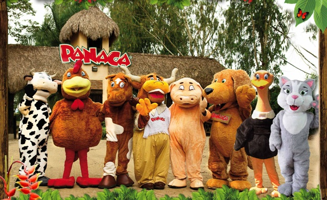

El parque temático agropecuario más grande de Latinoamérica. Interacción con 4.500 animales de zoología doméstica en 10 estaciones temáticas. 5 shows espectaculares y sendero ecológico. Experiencia familiar inolvidable.

El Parque Nacional de la Cultura Agropecuaria Panaca abrió sus puertas el 7 de diciembre de 1999. Es un parque temático que propicia la interactividad del hombre con la naturaleza y la zoología doméstica, siguiendo la visión de Walt Disney sobre parques temáticos como lugares donde padres e hijos pasan juntos momentos maravillosos, profesores y alumnos exploran nuevas formas de aprender, y las maravillas del hombre y la naturaleza están al alcance de todos.
Con 4.500 animales de zoología doméstica distribuidos en 10 estaciones temáticas, Panaca ofrece una experiencia educativa y divertida para toda la familia, destacando la importancia de la agropecuaria en Colombia.
Agronomía, Ganadería, Especies Menores, Avestruces, Porcicultura, Felina, Agroecología, Sericultura, Canina y Equina.
Interacción directa con animales de zoología doméstica. Alimentar, ordeñar y aprender sobre su cuidado.
En el Campo está el Futuro, Aventuras de Flor Azucena, Cerdódromo Juan Chancho Montó Ya, Instinto Show Guau, Mundo del Caballo.
Caminata de 3.1 km bajando 45 minutos hasta la quebrada Buenavista. Dificultad tipo "A".
Días: Martes a Domingo
Horario: 9:00 am - 6:00 pm
No opera lunes
Días: Todos los días
Horario: 9:00 am - 6:00 pm
Operación completa
💡 Recomendación: Llegar temprano para evitar filas y disfrutar al máximo de todas las estaciones y shows.
Ropa cómoda, calzado cerrado (tenis o botas). Sombrero y protector solar recomendados.
Llevar chaqueta ligera para cambios de temperatura. Paraguas por si llueve.
El parque requiere el día completo. Recomendamos llegar al abrir para aprovechar todo.
Cámara para capturar momentos con animales. Recuerda no usar flash en las estaciones.
Experiencia ideal para niños. Llevar cambio de ropa si interactúan con animales.
Hay restaurantes dentro del parque. No se permite ingresar alimentos externos.
Panaca se incluye en varios de nuestros planes familiares. Contáctanos para cotizar tu experiencia completa con transporte y guías.